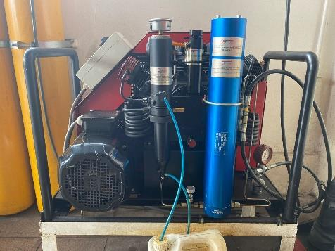
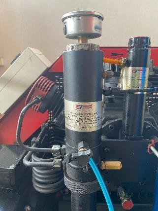
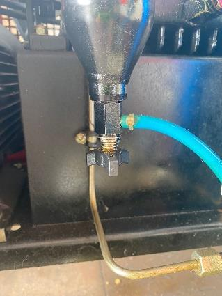
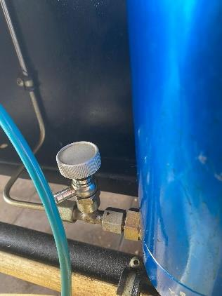
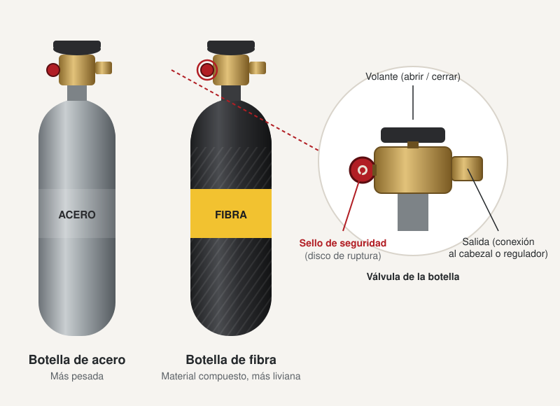

Simulador de carga de botellas ERA con el compresor Comp Trade CTP 300 y la cascada de ocho cilindros del cuartel, para practicar el procedimiento de operación.
Preguntas que hay que tener claras
Antes de practicar con el simulador, repasa estas preguntas: son las que más se hacen sobre el compresor y las botellas. Las respuestas salen del Procedimiento de Operaciones Compresor y Cascada de la compañía (agosto de 2022) y de la capacitación de compresor y cascada del 6 de noviembre de 2026. Ante cualquier diferencia, manda el procedimiento y lo que diga el instructor.
Del compresor
- ¿Qué marca y modelo es el compresor, y cuánta presión levanta?
- Es un Comp Trade CTP 300, con motor eléctrico trifásico de 380 volt y tres cabezales (es un compresor de tres cabezas). Comp Trade es una marca austríaca (Comp Trade GmbH, de Oberwaltersdorf) que fabrica compresores de alta presión y de aire respirable para bomberos. Levanta unos 300 bar: su manómetro interno debe llegar a 4250 PSI (300 bar) antes de abrir la cascada, los cilindros de la cascada se cargan hasta 4300 PSI y las botellas de 4500 PSI (unos 310 bar) se terminan de cargar directo con el compresor. El modelo y los datos del equipo están en su placa: es el primer lugar donde mirar si hay dudas.
- ¿Cuáles son las partes del compresor?
- Según el procedimiento de la compañía y la capacitación:
- Luces de fase eléctrica (380 volt): deben estar encendidas las tres para usar el compresor.
- Partidor: la llave de encendido, que pasa por estrella (Y) y luego por triángulo (Δ).
- Horómetro: cuenta las horas de trabajo, que se anotan en el libro del compresor.
- Nivel de aceite, en el costado, y la tapa de arriba para rellenar.
- Manómetro del compresor, de doble escala (PSI y bar).
- Aspiración con filtro de papel. Como el aire entra siempre por el mismo punto, el filtro se ensucia ahí: se gira para aprovechar el resto y después se cambia.
- La correa, que mueve el compresor, y los enfriadores, que bajan la temperatura del aire entre etapas.
- Los tres filtros con sus válvulas de despiche, y las válvulas de seguridad.
- Manguera de llenado hacia la cascada o para carga directa.
- Cascada: ocho cilindros amarillos de 45 litros, cada uno con su llave.
- Regulador de presión con manómetros dobles a la salida de la cascada (el izquierdo marca la presión del compresor y el derecho la del cilindro en uso), con una perilla negra para fijar la presión de carga, y la manguera con el conector de cilindro y su despiche. En la clase se insiste en el nombre: los cabezales son las cabezas del compresor; lo que va en la botella es el conector de cilindro (en el simulador se llama «cabezal»).
- ¿Cómo se enciende y cómo se apaga?
- Se enciende en estrella, se esperan unos tres segundos («uno, dos, tres») y recién ahí se pasa a triángulo. Se apaga desde triángulo, contando «uno, dos», y a cero.
- ¿Qué haces si se cae una fase mientras trabajas?
- Con las tres luces de fase encendidas el equipo está operativo; si falta una, no parte. Si se cae una fase trabajando: apagar, desconectar, anotar en el libro y avisar al teniente, en ese orden y las cuatro cosas. Una vez se cambiaron las fases desde afuera y el compresor funcionó al revés: ante cualquier anomalía se para y se informa al tiro, porque el daño siempre va a ser menor.
- Encuentras el compresor desenchufado. ¿Lo enchufas?
- No. Está desenchufado por algo: desenchufar es la forma de avisar «aquí pasó algo». Pregunta, revisa el libro y, si nadie te da una respuesta, se queda desenchufado.
- ¿Qué EPP se debe usar al operarlo?
- Antiparras, guantes y orejeras de protección auditiva, y tener a mano un paño para limpiar al despichar. El equipo trabaja en torno a los 85 dB durante toda la carga, y la pérdida de audición no se recupera. Se trabaja con altas presiones: un chorro puede volar un ojo o un diente, y si revienta un cilindro o una colectora el accidente es grave. Mientras operas, nada de teléfono, y nadie te distrae ni te apura; si alguien te habla, paras.
- ¿Qué hay que revisar del aceite?
- El compresor usa aceite sintético. Antes de partirlo se revisa el nivel en el visor del costado: sirve entre unos 2 mm bajo la mitad y unos 2 mm sobre la mitad. Que en frío esté un poco bajo la mitad es normal, porque al funcionar el aceite se calienta y baja un poco más. Nunca se llena hasta arriba ni a tres cuartos: al calentarse se expande y gasifica, y genera sobrepresión sobre los pistones. Una vez alguien lo llenó de más, el aceite impregnó todo el circuito y la compañía estuvo un año sin compresor.
- ¿Por qué no se carga con los carros andando dentro del cuartel?
- Porque el compresor aspira el aire del cuartel y cargaría los gases de escape en las botellas. Antes de cargar se ventila: el portón se deja abierto a la mitad o a tres cuartos, y no se carga con carros funcionando adentro.
- ¿Cuántos litros carga por minuto?
- Unos 300 litros de aire por minuto, como indica el número del modelo (CTP 300). Cargar directo una botella de 30 minutos (unos 1270 litros de aire) toma unos 4 a 5 minutos, y una de 60 minutos (unos 2500 litros), unos 8 a 9. Desde la cascada es más rápido.
- ¿Qué filtros tiene el compresor, de qué es cada uno y cómo se despichan?
- Al comprimir, el aire suelta agua y arrastra aceite. El compresor tiene tres filtros, en este orden, cada uno con su despiche:
- Filtro de aceite y agua: el separador negro, con su manómetro arriba. Saca el condensado grueso. Se despicha abajo.
- Filtro de grasas y aceites ambientales: el separador cónico. No saca el aceite del compresor, sino el que trae el aire del ambiente; es el que bota un residuo blanquecino y espumoso. Se despicha abajo, con la válvula de su punta.
- Filtro de humedad, de carbón activado: el filtro azul, el último antes de la salida. Saca la humedad que queda y hace de barrera bacteriológica. Se despicha con la perilla de su base.

Vista general: separador negro y filtro azul

1. Filtro de aceite y agua (separador negro) y su despiche

2. Filtro de grasas y aceites ambientales (separador cónico) y su despiche

3. Filtro de humedad, de carbón activado (filtro azul), y su despiche
- ¿Cada cuánto se despicha durante la carga?
- La regla del procedimiento es cada 5 minutos. En la práctica se despicha al conectar y al terminar cada cilindro, mirando lo que sale para decidir: si viene condensado, se despicha más seguido. Si el cilindro llega casi lleno (unos 3000 PSI), basta con una vez; si llega bajo, se despicha al inicio y de nuevo antes de terminar.
- ¿Por qué el aire no puede ir completamente seco?
- Porque el aire seco y helado reseca y quema las vías aéreas de quien lo respira. Se le saca la humedad, pero no toda: tiene que conservar un porcentaje, y eso es lo que define el grado D del aire respirable.
- ¿Se puede cargar cuando está lloviendo?
- El procedimiento no lo prohíbe, pero hay que tener cuidado con la humedad. El compresor aspira el aire del ambiente: con lluvia, y en general en invierno, ese aire trae más agua, que se condensa al comprimirlo. Hay más condensado en los separadores (despicha más seguido) y el filtro de humedad se satura antes. Si entra humedad a las botellas, se oxidan por dentro y el bombero termina respirando aire viejo: huele fuerte, pica la garganta y sabe a mohoso. La toma de aire no debe mojarse ni aspirar gotas ni gases de escape. Ante la duda, consulta al oficial de guardia.
- ¿Qué pasa si desconectas con presión?
- Salta el o-ring: da lo mismo si es un cilindro de la cascada o el nipple del equipo. Antes de desconectar se cierran las válvulas y se despicha hasta que el manómetro marque cero. Así ya se han dañado dos conectores en la compañía, uno en el hilo y otro en el despiche.
- ¿Qué conectores de carga tiene y qué cuidados piden?
- Dos sistemas: el europeo (DIN) y el americano. No son intercambiables, porque uno tiene el hilo en pulgadas y el otro en milímetros. En el americano la misma perilla abre, cierra y despicha, y como se usa poco tiende a ponerse dura o quedarse pegada: no se fuerza, sino que se apaga, se despicha todo y recién ahí se resuelve. Al conectar, tres precauciones: que el hilo entre derecho y completo, la válvula cerrada antes de conectar y el apriete justo, porque apretar de más también rompe.
- ¿En qué orden se carga?
- Se privilegian las botellas de la Quinta: se cargan primero para que alcancen a enfriarse y después repasarlas hasta 4500 PSI. Luego se busca cargar la mayor cantidad de botellas lo más rápido posible: primero las de 30 minutos y al final las de 60. Si se gasta la cascada en las grandes, se baja muy rápido. De la cascada se abre primero el cilindro que tiene más aire: la carga termina más rápido y quedan más cilindros disponibles para después. Al terminar, conviene dejar las botellas separadas por marca y duración (30, 45 y 60 minutos).
- ¿Qué se anota en el libro del compresor?
- Cada carga se registra con:
- Fecha.
- Hora de inicio y de término, del reloj, y cuánto duró la carga.
- Horómetro de inicio y de término, y su diferencia.
- Quién operó y quién cargó.
- Cantidad de cilindros, separados por compañía.
- Novedades; si no hay, se escribe SN.
De las botellas
- ¿Cuánto dura una botella?
- Varía. Los minutos nominales son el máximo, en condiciones ideales: lo que dura de verdad depende del estado físico y psicológico de quien respira. Un bombero estresado o agotado consume más aire, y con trabajo pesado se pueden consumir 60 a 100 litros por minuto, así que una botella «de 30 minutos» puede durar 15 o 20. Por eso, de dos que llegan a la emergencia, el equipo se lo pone el que llegó en el carro, no el que llegó corriendo y ya viene agitado.
- ¿Qué tipos de botellas existen según su material?
- De acero, más pesadas, y de fibra (material compuesto: un cuerpo de aluminio envuelto en fibra de carbono o de vidrio), más livianas. Las de fibra tienen una vida útil limitada, que va indicada en su etiqueta (normalmente 15 años).
- ¿De cuántos litros son las botellas y cuánto aire cabe dentro?
- Depende de su duración nominal, que se calcula con un consumo de 40 litros por minuto:
- 30 minutos de 4500 PSI (fibra): unos 4,7 litros por dentro y unos 1270 litros de aire (45 pies cúbicos).
- 30 minutos de 2216 PSI (acero o aluminio): unos 8 litros por dentro y el mismo aire, unos 1270 litros. Es más grande porque va a menos presión.
- 45 minutos de 4500 PSI: unos 6,8 litros y unos 1870 litros de aire (66 pies cúbicos).
- 60 minutos de 4500 PSI: unos 9 litros y unos 2500 litros de aire (88 pies cúbicos).
- ¿Cada cuánto hay que renovar el aire de una botella?
- Cada unos 6 meses, según el fabricante. Renovarlo no es botarlo: la botella se ocupa en una cancha de consumo o en cualquier ejercicio y se vuelve a cargar. Hay que ir rotando: si siempre se sacan, cargan y devuelven las de arriba, las de abajo se quedan con aire viejo. La de abajo sube. Lo mismo vale para la cascada.
- ¿Qué dice la etiqueta de los cilindros?
- La etiqueta y lo estampado en el cuello indican, entre otras cosas:
- Fabricante, modelo y número de serie.
- Norma con que se fabricó (por ejemplo DOT-CFFC o DOT-3AL en las estadounidenses).
- Presión de servicio (2216 o 4500 PSI, o en bar).
- Volumen interior y capacidad de aire.
- Fecha de fabricación y fechas de las pruebas hidrostáticas.
- Vida útil o fecha de vencimiento en las de fibra («no usar después de»).
- Advertencias: cargar solo con aire respirable, no pasar la presión de servicio y no usarla si está golpeada, quemada o con la fibra dañada.
- ¿Qué presión de carga tienen las botellas y a cuántos bar equivale?
- Las que se cargan en el cuartel son de norma estadounidense: 2216 PSI (unos 153 bar, se habla de 150) y 4500 PSI (unos 310 bar, se habla de 300). Las de norma europea vienen en bar (200 o 300) y las de buceo suelen ser de 3000 PSI (unos 207 bar): hay que convertir antes de cargarlas. 1 bar son 14,5 PSI. Recién cargado, el aire está caliente y una botella o un cilindro de la cascada puede marcar sobre lo nominal; al enfriarse baja.
- ¿Qué marcas de botellas hay?
- Scott y MSA, estadounidenses, con presiones en PSI, y Dräger, alemana, que puede venir en bar. Antes de cargar, lee siempre la presión de servicio grabada o rotulada en la botella.
- ¿Dónde está la válvula de seguridad?
- Es un sello de seguridad (disco de ruptura) en el cuerpo de la válvula de la botella, al costado. Si la presión sube demasiado (por sobrellenado o por calor), el disco se rompe y descarga el aire para que la botella no reviente. Una botella con el sello roto o dañado queda fuera de servicio.

- ¿A qué presión se rompe el sello de seguridad?
- Cerca de la presión de prueba de la botella, que en norma estadounidense es 5/3 de su presión de servicio: unos 3700 PSI (255 bar) en una botella de 2216 PSI y unos 7500 PSI (517 bar) en una de 4500 PSI. Por eso cargar una botella de 2216 con el regulador a 4500 rompe el sello. El valor exacto va grabado en la válvula o en el disco.
- ¿Cada cuánto hay que hacerles prueba hidrostática a las botellas?
- Por norma, cada 5 años, tanto las de acero como las de fibra (en norma estadounidense, DOT; la europea también pide 5 años). Algunas botellas de fibra más antiguas, fabricadas con permiso especial (DOT-SP), piden cada 3 años. La fecha de la última prueba va estampada en el cuello o en la etiqueta: una botella vencida no se carga.
Simulador
Se abre a pantalla completa. Funciona mejor en un computador o una tablet.